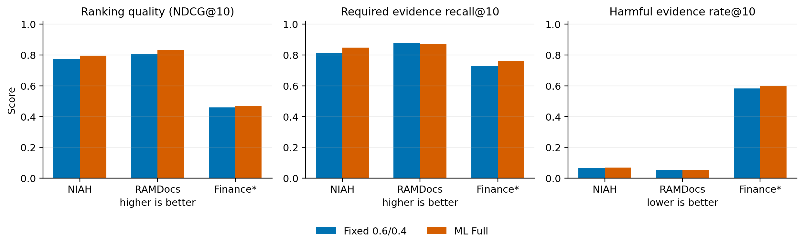
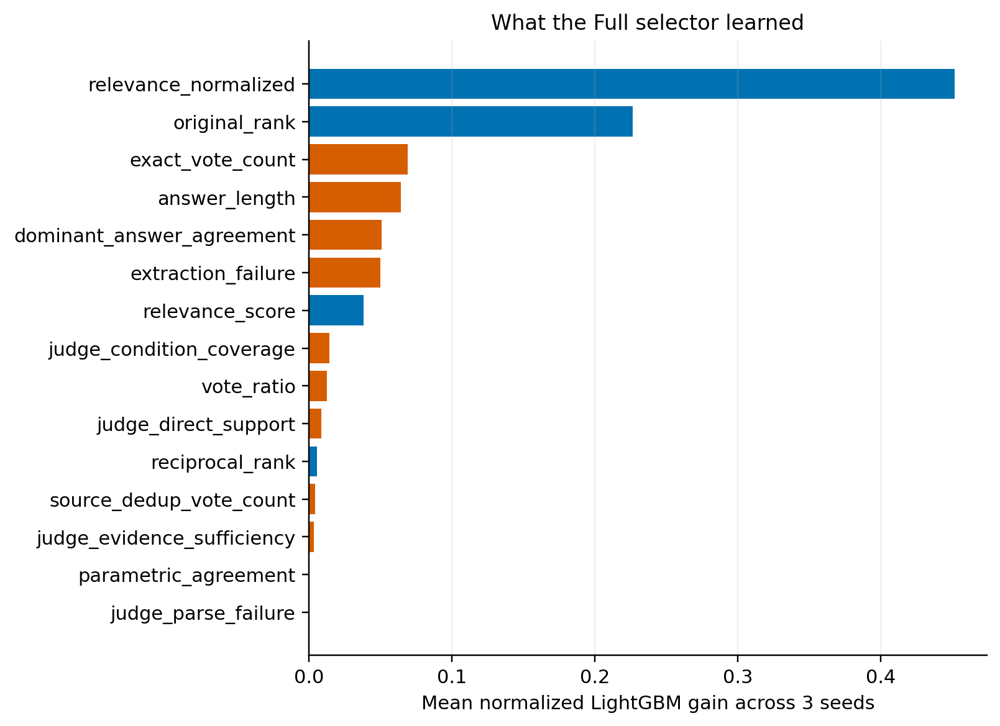
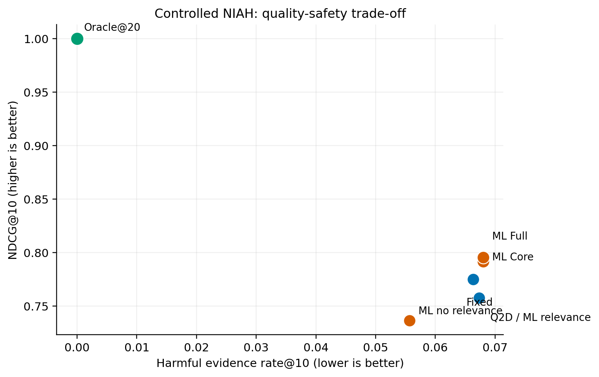

Experiment Validation Report
ML Evidence Selector：实验验证结果
验证学习式重排能否比固定跨源印证更好地选择进入 LLM context 的证据
1. 结论
实验确认了研究问题：相关候选中确实混有大量错误实体、错误版本和冲突材料，普通相关性检索无法保证 LLM 看到可信证据。
当前 ML selector 能提高排序质量并保住更多正确证据，但没有稳定减少误导证据。研究方向成立，现有方法尚未达到可靠性选择器的通过标准。
因此，当前成果适合表述为“发现并量化 evidence reliability gap，同时验证了学习式重排的部分潜力”。Granite 微调和完整 RAG 评估暂缓，先解决标签和可靠性特征。
2. 我们怎样验证
统一候选Query2Doc + Granite dense 生成固定 top-20
加入困难证据反事实、冲突、错误年份/公司、弱支持材料
提取信号相关性、排名、答案投票、支持与条件覆盖
训练重排器LightGBM LambdaRank，3 个随机种子
固定 top-10比较进入 LLM context 的证据质量
| 数据 | 作用 | 规模与评估边界 |
|---|---|---|
| Sealed NIAH | 受控误导环境主测试 | 500 train / 300 dev / 300 sealed test；按问题和父页面隔离 |
| RAMDocs | 未见冲突数据外部测试 | 500 题；官方候选加 mined negatives，固定 20→10 |
| FinanceBench | 企业财报、年份和公司错误 | 150 题、84 份财报、109,904 个片段；重点报告 top-20 含官方证据的 61 题 |
| ContractNLI | 合同证据支持测试 | 1,188 个有正式证据的 test 任务；该数据没有 harmful 标签 |
3. 候选池先暴露了什么
75.4%NIAH 问题的 top-20 中出现误导证据
96.7%FinanceBench 问题混入错误公司或错误年份材料
40.7%FinanceBench 问题的官方证据进入 top-20
NIAH 的正确证据候选覆盖率达到 94.4%，主要提升空间位于重排。FinanceBench 的覆盖率只有 40.7%，说明企业财报还存在明显的第一阶段 retrieval failure。selector 只能重排已有候选，无法选回候选池之外的证据。
4. 主要结果

| 数据 | 指标 | Fixed | ML Full | 判断 |
|---|---|---|---|---|
| Sealed NIAH | NDCG@10 | 0.775 | 0.796 | +0.0206，95% CI [0.0105, 0.0308] |
| Required Recall@10 | 0.812 | 0.849 | +0.0368，显著提高 | |
| Harmful Rate@10 | 0.0663 | 0.0680 | 增加 0.0017，未改善 | |
| RAMDocs | NDCG@10 | 0.807 | 0.831 | +0.0235，显著提高 |
| Required Recall@10 | 0.877 | 0.874 | 非劣下界未通过 | |
| Harmful Rate@10 | 0.0516 | 0.0522 | 没有下降 | |
| FinanceBench* | NDCG@10 | 0.460 | 0.471 | +0.0104，CI 跨 0 |
| Gold coverage@10 | 73.8% | 77.0% | +3.3pp，CI 跨 0 | |
| Harmful Rate@10 | 58.2% | 59.7% | 增加 1.5pp | |
| ContractNLI | NDCG@10 | 0.700 | 0.567 | QA 特征直接迁移失败 |
| Required Recall@10 | 0.814 | 0.727 | 合同需要专用 NLI 信号 |
5. 为什么提高了召回，却没有提高安全性

模型约 72% 的增益来自原始相关性和排名。Granite 的直接支持、条件覆盖和证据充分性判断合计约 2.7%，`answer_length` 反而占 6.4%。当前模型主要学会了更灵活地组合相关性和投票，尚未获得稳定的时间、实体、条件和冲突判断能力。

6. 预注册 Gate 判断
Gate 0未完成：split 与 feature leakage 检查通过；两名人工标注者的 weighted kappa 仍待完成。双 Granite 审计与 canonical label 的 kappa 仅 0.005–0.080。
Gate 1未通过：NDCG 和 Required Recall 提高；Harmful Rate 没有降低 0.02，也没有显著改善。
Gate 2未通过：RAMDocs 仅改善 NDCG；FinanceBench 改善不显著且 harmful 变差；ContractNLI 跨域失败。
Gate 3按停止规则未运行：Gate 1 未通过后停止完整 RAG，避免用答案端波动掩盖证据选择问题。
7. 下一步
先完成可信标签。 两名成员独立标注 80 个完整 query group，明确实体错误、时间错误、条件不适用和冲突，weighted kappa 达到 0.70 后再训练。
把 harmful 作为独立训练目标。 在排序 utility 之外增加 harmful penalty 或 pairwise constraint，要求错误证据排在可信证据之后。
按任务补专用信号。 FinanceBench 增加公司、报告年份、指标和单位匹配；ContractNLI 使用 entail / contradict / unknown 的 NLI 特征。
先修 FinanceBench 候选召回。 官方证据进入 top-20 的比例需要从 40.7% 提高，随后再公平评估 selector。
最终判断：“相关性与证据可靠性会脱钩”已经得到清楚支持；“当前 ML selector 能稳定筛掉误导证据”没有得到支持。Granite 微调暂不进入，下一轮先修标签、可靠性特征和 harmful-aware objective。
原始结果：NIAH · RAMDocs · FinanceBench · ContractNLI